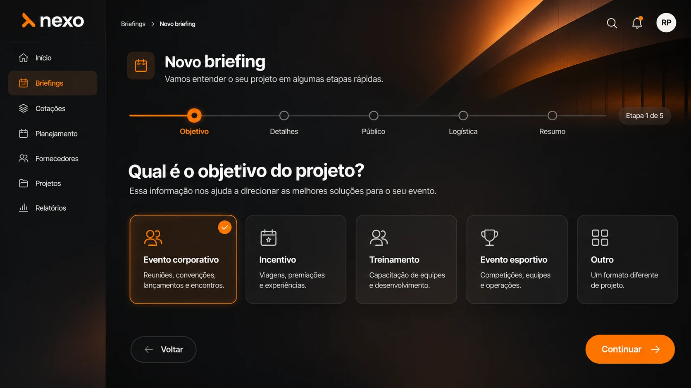

Clareza para decidir
Escopo, custos e versões no contexto do projeto. Cada decisão com seu ponto de partida.
Gestão de eventos e grupos corporativos
Conecte briefings, cotações, fornecedores e planejamento. Mais clareza para quem organiza. Mais controle em cada decisão.
Seu próximo evento começa aqui.
A operação, por inteiro
Uma plataforma para transformar demandas em projetos organizados, com contexto em cada etapa.
O ponto de partida com escopo, contexto e versões organizadas.
Conhecer o fluxoItens, custos e propostas reunidos para decisões mais claras.
Entender a etapaAtividades e prazos para acompanhar o que vem depois da aprovação.
Entender a etapaParceiros e pedidos de cotação ligados ao briefing do projeto.
Entender a etapaPapéis definidos para quem solicita, organiza e acompanha.
Conhecer os perfisInformações e decisões que acompanham a evolução do evento.
Explorar o conceitoEspaço para o que importa
Quando a informação está conectada, o time pode se concentrar no que faz um evento acontecer.
Escopo, custos e versões no contexto do projeto. Cada decisão com seu ponto de partida.
Consultores conduzem a operação. Clientes acompanham suas demandas e decisões.
Briefing, cotação e proposta fazem parte da mesma história.
Como funciona
Explore as etapas e veja como as informações acompanham a operação.
Reúna objetivo, destino, período e serviços. Cada nova versão mantém o histórico do que foi solicitado.
A próxima experiência NEXO
Explore os conceitos de interface que orientam a nova plataforma.


Prévia visual da nova experiência. Os conceitos ilustram a direção de design e não representam funcionalidades já disponíveis.
Toda a operação. Uma só conexão.
Conheça uma nova forma de conectar demandas, pessoas e decisões.
Explorar a plataforma